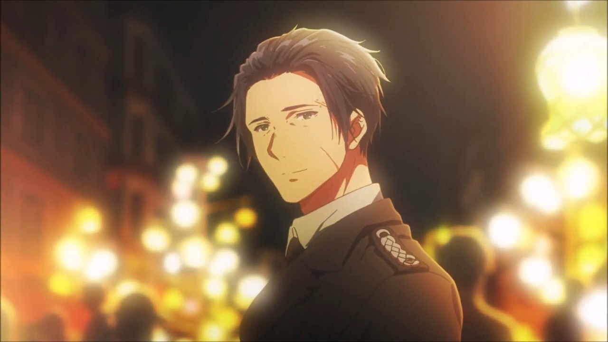
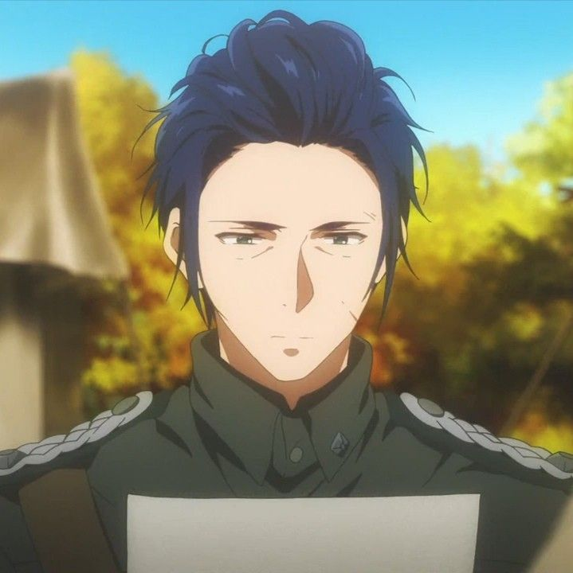
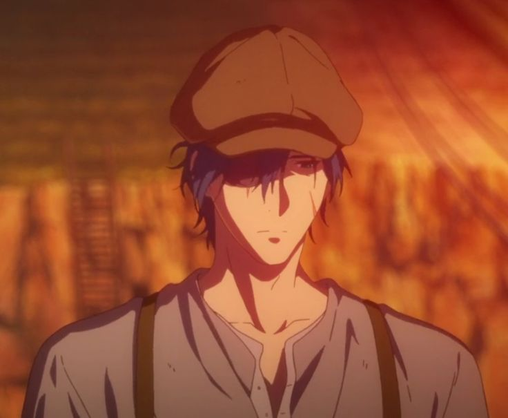
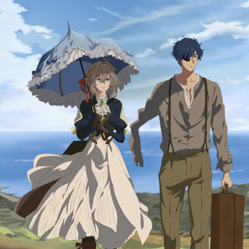
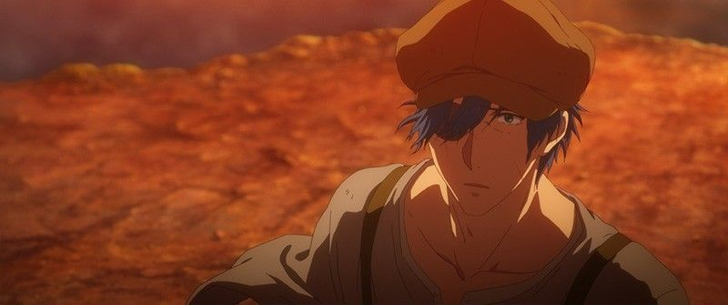

Gilbert Bougainvillea

Gilbert Bougainvillea proviene de una prestigiosa familia militar, pero su personalidad amable y reflexiva contrastaba con las expectativas de su entorno. A pesar de esto, aceptó su deber en el ejército y se destacó como un comandante responsable y compasivo. Durante la guerra, Gilbert fue asignado a liderar una unidad especial y recibió la custodia de Violet, una joven huérfana entrenada como un arma. Aunque al principio vio en ella una herramienta militar, pronto comenzó a percibirla como una persona, lo que transformó la relación entre ambos.
Gilbert se convirtió en una figura clave en la vida de Violet. Fue quien le enseñó a leer, escribir y a expresarse, tratando de mostrarle un mundo más allá del combate. Aunque su papel inicial fue el de su superior, pronto desarrolló un cariño profundo hacia ella, convirtiéndose en alguien que buscaba proteger su humanidad. Sus palabras, "vive y sé libre", dichas en el campo de batalla, marcaron un punto de inflexión tanto para Violet como para él mismo.
Durante una misión crítica en la guerra, Gilbert resultó gravemente herido mientras intentaba proteger a Violet. Su aparente sacrificio no solo puso fin a la guerra en su región, sino que también dejó a Violet sumida en el dolor y la incertidumbre sobre su destino. Aunque su desaparición fue interpretada como su muerte, la influencia de Gilbert siguió siendo un faro en la vida de Violet, guiándola en su búsqueda por comprender el significado del amor y las emociones humanas.
Gilbert Bougainvillea representa el amor y la bondad en un mundo devastado por la guerra. Su capacidad para ver más allá de la fachada de Violet y tratarla con humanidad cambió no solo su vida, sino también la de quienes los rodearon. Aunque su destino parecía trágico, su legado vivió en las cartas y en el corazón de Violet, impulsándola a continuar su viaje de autodescubrimiento. Gilbert no solo fue un comandante; fue un símbolo de esperanza y redención en medio del caos.
Galleria



